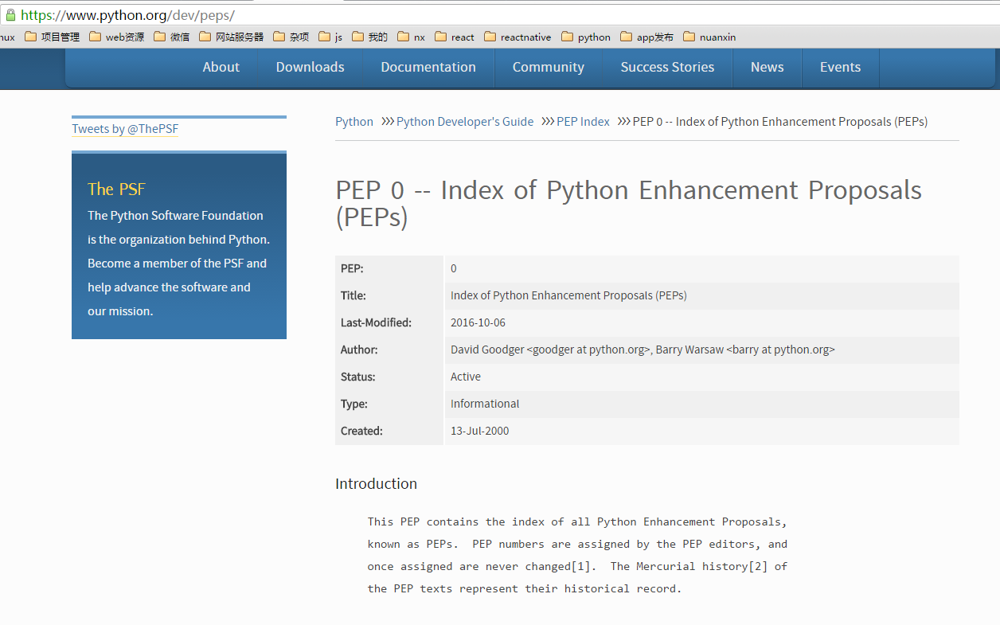
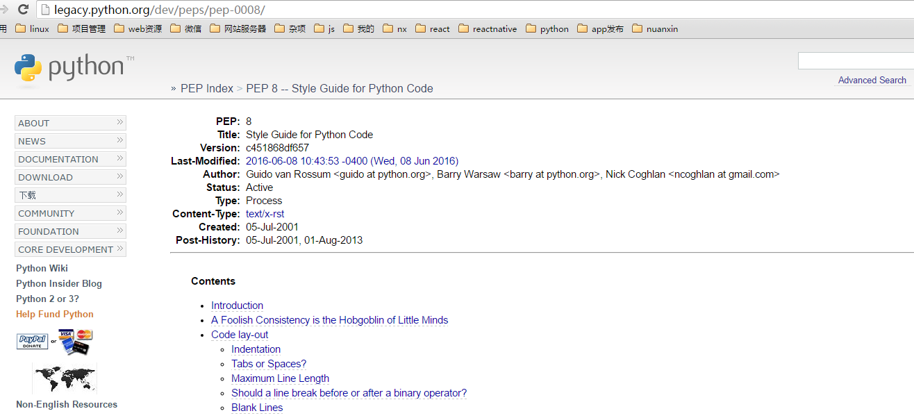

编码风格
错误认知
- 这很浪费时间
- 我是个艺术家
- 所有人都能穿的鞋不会合任何人的脚
- 我善长制定编码规范
正确认知
- 促进团队合作
- 减少bug处理
- 提高可读性，降低维护成本
- 有助于代码审查
- 养成习惯，有助于程序员自身的成长
pep8 编码规范
Python Enhancement Proposals ：python改进方案
https://www.python.org/dev/peps/

pep8 官网规范地址
https://www.python.org/dev/peps/pep-0008/

Guido的关键点之一是：代码更多是用来读而不是写。编码规范旨在改善Python代码的可读性。
风格指南强调一致性。项目、模块或函数保持一致都很重要。
每级缩进用4个空格。
括号中使用垂直隐式缩进或使用悬挂缩进。后者应该注意第一行要没有参数，后续行要有缩进。
- Yes
# 对准左括号
foo = long_function_name(var_one, var_two,
var_three, var_four)
# 不对准左括号，但加多一层缩进，以和后面内容区别。
def long_function_name(
var_one, var_two, var_three,
var_four):
print(var_one)
# 悬挂缩进必须加多一层缩进.
foo = long_function_name(
var_one, var_two,
var_three, var_four)
- No
# 不使用垂直对齐时，第一行不能有参数。
foo = long_function_name(var_one, var_two,
var_three, var_four)
# 参数的缩进和后续内容缩进不能区别。
def long_function_name(
var_one, var_two, var_three,
var_four):
print(var_one)
4个空格的规则是对续行可选的。
# 悬挂缩进不一定是4个空格
foo = long_function_name(
var_one, var_two,
var_three, var_four)
if语句跨行时，两个字符关键字(比如if)加上一个空格，再加上左括号构成了很好的缩进。后续行暂时没有规定，至少有如下三种格式，建议使用第3种。
# 没有额外缩进，不是很好看，个人不推荐.
if (this_is_one_thing and
that_is_another_thing):
do_something()
# 添加注释
if (this_is_one_thing and
that_is_another_thing):
# Since both conditions are true, we can frobnicate.
do_something()
# 额外添加缩进,推荐。
# Add some extra indentation on the conditional continuation line.
if (this_is_one_thing
and that_is_another_thing):
do_something()
右边括号也可以另起一行。有两种格式，建议第2种。
# 右括号不回退，个人不推荐
my_list = [
1, 2, 3,
4, 5, 6,
]
result = some_function_that_takes_arguments(
'a', 'b', 'c',
'd', 'e', 'f',
)
# 右括号回退
my_list = [
1, 2, 3,
4, 5, 6,
]
result = some_function_that_takes_arguments(
'a', 'b', 'c',
'd', 'e', 'f',
)
空格或Tab?
- 空格是首选的缩进方法。
- Tab仅仅在已经使用tab缩进的代码中为了保持一致性而使用。
- Python 3中不允许混合使用Tab和空格缩进。
- Python 2的包含空格与Tab和空格缩进的应该全部转为空格缩进。
最大行宽
- 限制所有行的最大行宽为79字符。
- 文本长块，比如文档字符串或注释，行长度应限制为72个字符。
空行
- 两行空行分割顶层函数和类的定义。
- 类的方法定义用单个空行分割。
- 额外的空行可以必要的时候用于分割不同的函数组，但是要尽量节约使用。
- 额外的空行可以必要的时候在函数中用于分割不同的逻辑块，但是要尽量节约使用。
源文件编码
- 在核心Python发布的代码应该总是使用UTF-8(ASCII在Python 2)。
- Python 3(默认UTF-8)不应有编码声明。
导入在单独行
Yes：
import os import sys from subprocess import Popen, PIPENo:
import sys, os导入始终在文件的顶部，在模块注释和文档字符串之后，在模块全局变量和常量之前。
导入顺序如下：标准库进口,相关的第三方库，本地库。各组的导入之间要有空行。
禁止使用通配符导入。
通配符导入(fromimport *)应该避免，因为它不清楚命名空间有哪些名称存，混淆读者和许多自动化的工具。
字符串引用
- Python中单引号字符串和双引号字符串都是相同的。注意尽量避免在字符串中的反斜杠以提高可读性。
- 根据PEP 257, 三个引号都使用双引号。
括号里边避免空格
# 括号里边避免空格
# Yes
spam(ham[1], {eggs: 2})
# No
spam( ham[ 1 ], { eggs: 2 } )
逗号，冒号，分号之前避免空格
# 逗号，冒号，分号之前避免空格
# Yes
if x == 4: print x, y; x, y = y, x
# No
if x == 4 : print x , y ; x , y = y , x
索引操作中的冒号当作操作符处理前后要有同样的空格(一个空格或者没有空格，个人建议是没有。)
# Yes
ham[1:9], ham[1:9:3], ham[:9:3], ham[1::3], ham[1:9:]
ham[lower:upper], ham[lower:upper:], ham[lower::step]
ham[lower+offset : upper+offset]
ham[: upper_fn(x) : step_fn(x)], ham[:: step_fn(x)]
ham[lower + offset : upper + offset]
# No
ham[lower + offset:upper + offset]
ham[1: 9], ham[1 :9], ham[1:9 :3]
ham[lower : : upper]
ham[ : upper]
函数调用的左括号之前不能有空格
# Yes
spam(1)
dct['key'] = lst[index]
# No
spam (1)
dct ['key'] = lst [index]
赋值等操作符前后不能因为对齐而添加多个空格
# Yes
x = 1
y = 2
long_variable = 3
# No
x = 1
y = 2
long_variable = 3
二元运算符两边放置一个空格
涉及 =、符合操作符 ( += , -=等)、比较( == , < , > , != , <> , <= , >= , in , not in , is , is not )、布尔( and , or , not )。
优先级高的运算符或操作符的前后不建议有空格。
# Yes
i = i + 1
submitted += 1
x = x*2 - 1
hypot2 = x*x + y*y
c = (a+b) * (a-b)
# No
i=i+1
submitted +=1
x = x * 2 - 1
hypot2 = x * x + y * y
c = (a + b) * (a - b)
关键字参数和默认值参数的前后不要加空格
# Yes
def complex(real, imag=0.0):
return magic(r=real, i=imag)
# No
def complex(real, imag = 0.0):
return magic(r = real, i = imag)
通常不推荐复合语句(Compound statements: 多条语句写在同一行)。
# Yes
if foo == 'blah':
do_blah_thing()
do_one()
do_two()
do_three()
# No
if foo == 'blah': do_blah_thing()
do_one(); do_two(); do_three()
尽管有时可以在if/for/while 的同一行跟一小段代码，但绝不要跟多个子句，并尽量避免换行。
# No
if foo == 'blah': do_blah_thing()
for x in lst: total += x
while t < 10: t = delay()
更不是：
# No
if foo == 'blah': do_blah_thing()
else: do_non_blah_thing()
try: something()
finally: cleanup()
do_one(); do_two(); do_three(long, argument,
list, like, this)
if foo == 'blah': one(); two(); three()
避免采用的名字
决不要用字符'l'(小写字母el)，'O'(大写字母oh)，或 'I'(大写字母eye) 作为单个字符的变量名。一些字体中，这些字符不能与数字1和0区别。用'L' 代替'l'时。
包和模块名
模块名要简短，全部用小写字母，可使用下划线以提高可读性。包名和模块名类似，但不推荐使用下划线。